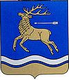
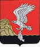
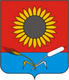

Достопримечательности по районам
Трасса М6 "Каспий" на своем пути до Волгограда пересекает 6 районов Волгоградской области. Каждый из них обладает своими достопримечательностями или просто интересными местами, с которыми Вы можете познакомиться, путешествуя по Волгоградской области на машине.
Все районы перечислены ниже. Расположение относительно трассы М6 показано на представленных картах. Для подробного знакомства с достопримечательностями районов Волгоградской области, которые могу встретиться Вам на трассе М6 «Каспий», перейдите на страницы районов.
 )
)
Интерактивная карта районов Волгоградской области через которые проходит трасса М6 (увеличить  )
)
1.Городищенский район

Городищенский район - последний на трассе М6 перед Волгоградом. Это один из наиболее крупных районов Волгоградской области. Районный центр – п.т.г. Городище.
2.Иловлинский район
Иловлинский район расположен в междуречье рек Дон, Иловля и Волга севернее города Волгограда. Расположене перед Городищенским районом. Центром является р.п. Иловля
3.Фроловский район
Фроловский район расположен в северо-западной части Волгоградской области, на водоразделе рек, впадающих в реку Дон. Административный центр — г. Фролово.
4.Михайловский район
Михайловский район расположен на северо-западе Волгоградской области. По территории района протекает живописная река Медведица. Центр – г. Михайловка.
5.Новоаннинский район
Новоаннинский район расположен в северо-западной части Волгоградской области. Район считается житницей Волгоградской области. Районный центр - г. Новоаннинский.
6.Новониколаевский район
Новониколаевский район - граничный район северо-запада Волгоградской области. Первый на трассе М6 со стороны московского направления. Центр — п.г.т. Новониколаевский.